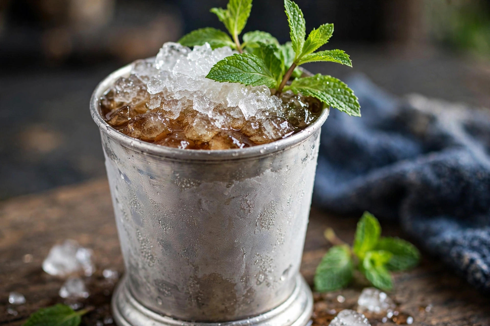

| Mint julep | |
|---|---|
 | |
| Type | Cocktail |
| Primary alcohol | Bourbon whiskey |
| Served | On the rocks (crushed ice) |
| Garnish | Mint sprig |
| Standard drinkware | Silver or pewter julep cup; highball glass |
| Ingredients | Bourbon, fresh mint leaves, sugar or simple syrup, water, crushed ice |
A mint julep is an alcoholic cocktail, principally consisting of bourbon, sugar, water, crushed or shaved ice, and fresh mint. As a bourbon-based cocktail, it is associated with the cuisine and culture of the Southern United States, and most famously with the Kentucky Derby.
The word julep derives from the Arabic julāb and Persian gulāb, meaning rosewater, and originally denoted a sweet medicinal drink. In 18th- and early 19th-century America, juleps were made with various spirits — rum, brandy, gin, or whiskey — and mint juleps were a morning drink of Virginia planters. The drink was carried west into Kentucky, where bourbon became the standard base. Senator Henry Clay of Kentucky is credited with introducing the mint julep to Washington society.
The mint julep has been the official drink of the Kentucky Derby at Churchill Downs since 1938 (promoted from 1875 onward); roughly 120,000 juleps are served over the two days of the Kentucky Oaks and Derby. A premium $1,000 julep in a gold-plated cup has been sold for charity in recent years.
Fresh mint leaves are gently pressed (not shredded) with sugar and a little water to release the oils; bourbon is added, and the cup is packed with crushed ice until frost forms on the outside. Traditionally the julep is served in a silver or pewter cup held only by the top and bottom edges so the frost is undisturbed. It is an IBA Official Cocktail.
See also: Kentucky Derby; Bourbon whiskey; Mojito; Old fashioned (cocktail).